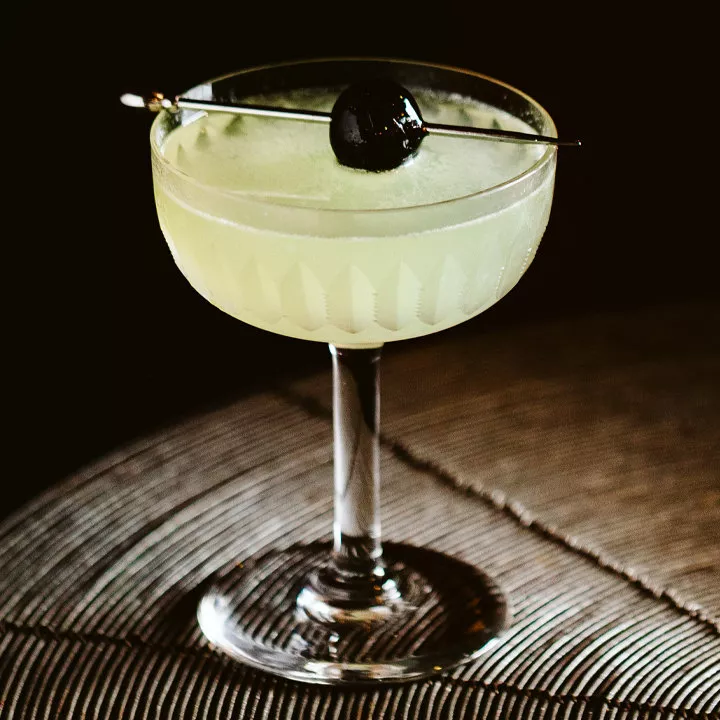

The Last Word was first served at the Detroit Athletic Club, circa 1915. Created just before the start of Prohibition, likely by a bartender named Frank Fogarty, it’s one of the cocktail canon’s most successful Prohibition-era drinks.
Composed of gin, green Chartreuse, maraschino liqueur and fresh lime juice, the Last Word showed some staying power and appeared in Ted Saucier’s 1951 book, “Bottoms Up.” But by then, it had mostly fallen out of favor, and after World War Two, it retreated to the dusty corners of cocktails past.
After decades of being lost to history, the Last Word was one of the first pre-Prohibition drinks to lead the cocktail revival of the early aughts. Murray Stenson, then working at Seattle’s Zig Zag Café, unearthed the equal-parts classic, finding it in Saucier’s book. He shook up the drink for his customers, and the Last Word’s presence proliferated from there. Before long, the Last Word was a staple in cocktail bars across the country, revered for its heady balance of sweet, sour and herbal flavors.
The Last Word is about as close to perfect as cocktails can be. But like with many classics, creative bartenders—both of the professional and at-home variety—have found ways to create variations on the Last Word. The Paper Plane, invented by NYC barkeep Sam Ross in 2008, is a liberal take on the original that features bourbon. Other variations hew more closely to the classic recipe, but sub gin for another base spirit. Mezcal makes an earthy, savory version, while rhum agricole produces a fresh and grassy drink. Of course, the first versions were supposedly made with bathtub gin specific to the Detroit Athletic Club, so even London Dry or Old Tom gins technically stray from the original.